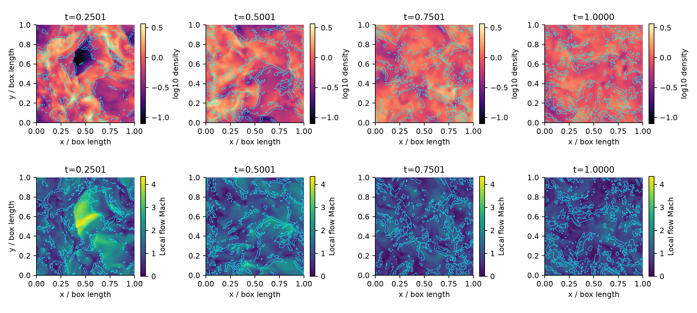
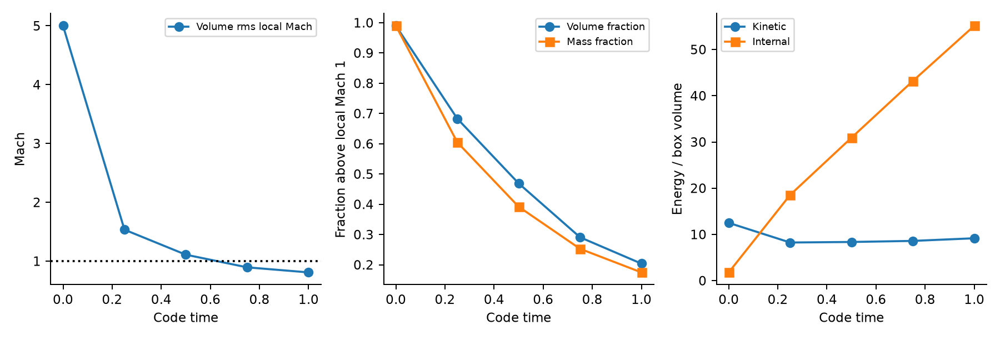
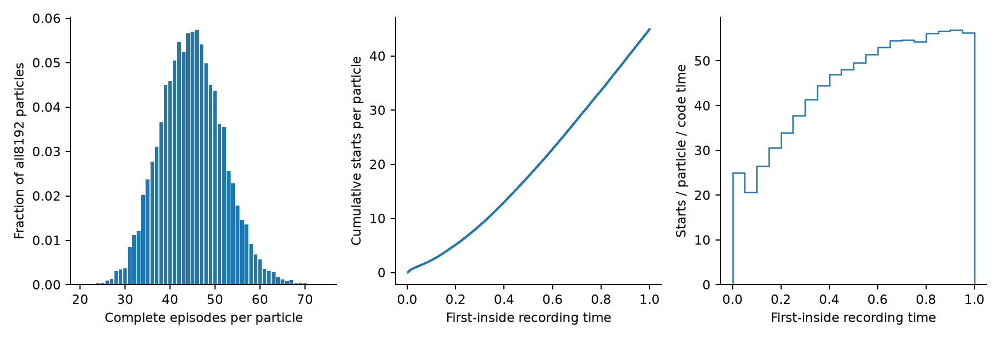
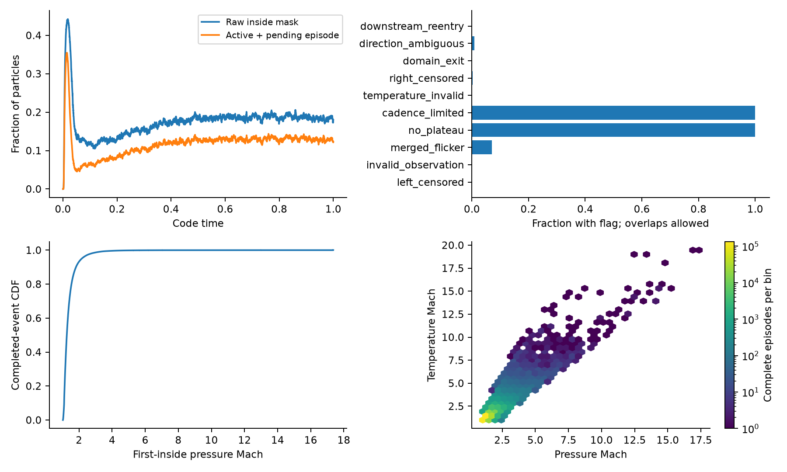
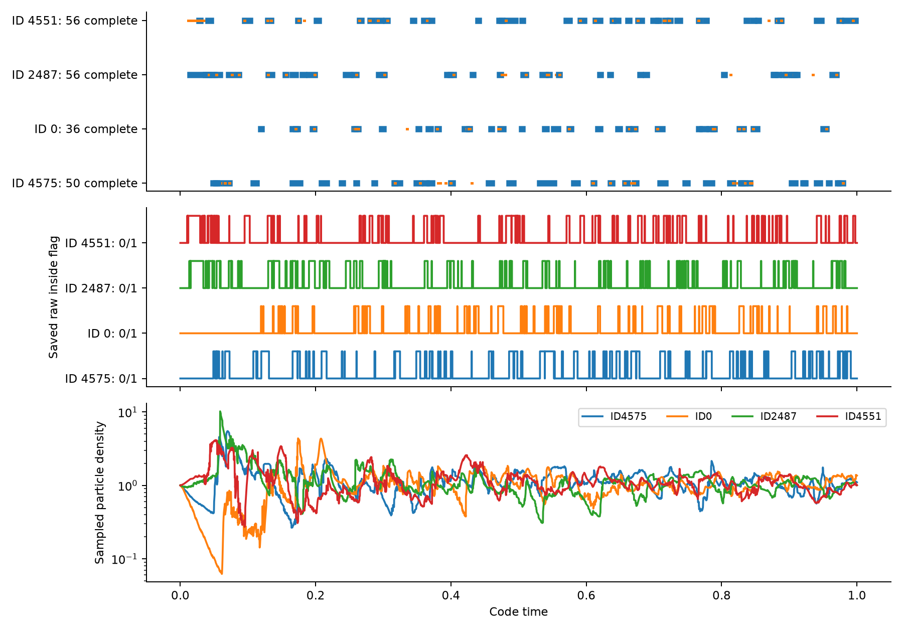
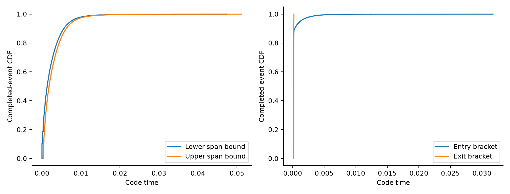
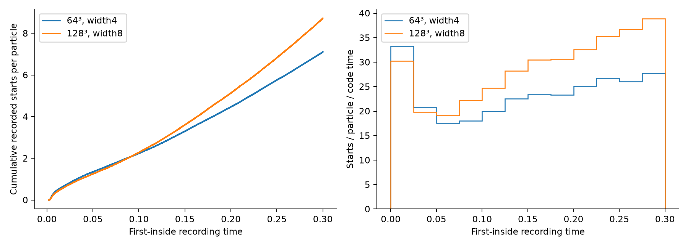

128-cubed forced box: longer particle histories
completed_scientific_review_pending; through t=1, generation6033. Scientific approval pending.
128-cubed flow and detected regions

Actual z=64 cell-center slices (z=0.50390625). Top: log10 density; bottom: local speed/sound speed. Each row uses shared color limits spanning all plotted data, with no clipped tails. Cyan outlines use the native unreduced width8 detector. The central crop has full real support; masks and finite/NaN strength values agree with actual live particle samples on this plane at rtol=atol=1e-12. Checkpoint maps were recovered with the same binary and zero evolved steps. These detector masks are numerical evidence, not independently certified physical shock surfaces.
Vector SVGFlow evolution under continuous forcing

Volume rms Mach = sqrt(mean(v^2/(gamma P/rho))). The gas is adiabatic: initial Mach5 and continuous edot50 do not hold its sound speed or Mach number fixed. Lines only connect the saved checkpoint states. Actual mass stays within1e-12 of1. Forcing energy is not independently calibrated because the inherited RK2 source thermal oracle fails; no stationary regime is asserted.
Vector SVGAccumulated particle encounter statistics

All8192 IDs are included, including zero-complete particles. Starts count every committed or terminal-open identity once at its first-inside sample. Partial/open outcomes are retained separately. Rate bins cover the stated time window; these are numerical recording rates, not exact physical shock crossing rates or independent Poisson trials.
Vector SVGShock flags, episode state and strength evidence

The full per-step trace explicitly saves each raw inside flag. Raw membership and encounter phase differ: a pending exit can be outside while the episode remains open, and a suppressed downstream reentry can be inside while its phase is outside. Both are plotted from recorded states. Suppressed reentry attempts are a separate native counter, not extra event identities. All validity bits are retained. Finite first-inside strength estimates compare two native estimators; their agreement is not a physical calibration. Either estimator can accept membership, so a pressure estimate belowmin_mach1.1 can remain present.
Vector SVGActual per-step particle flags and encounter histories

Same IDs as the earlier64-cubed history illustration, with fresh128-cubed realizations. Top: blue first-to-last inside evidence, orange entry/exit brackets, red right-censored terminal marker. Middle: every saved raw0/1 inside flag, vertically offset by particle. Bottom: actual every-step density samples. Connecting samples guides the eye; it does not invent continuous trajectories or exact crossing times. Selected IDs are illustrations, not unbiased ensemble statistics.
Vector SVGTiming bounds from observed samples

For complete episodes the entry bracket is[pre,first], exit bracket[last,post], and elapsed-span interval[last-first,post-pre]. No midpoint is assigned. Merged flicker may include brief outside intervals, so this span is not continuous inside residence time. Terminal-open records receive no artificial completed duration.
Vector SVGMatched detector span in the common time window

Both cases use8192 particles, CFL.30 and the same seeds/forcing inputs. Width8 at128³ matches width4 at64³ physical half-span1/16box. Only first-inside starts through the common observed endpoint are compared, including unique terminal-open identities; unequal later closure times do not bias this measure. Resolution still changes fluid evolution, MC random draws and observation cadence together. This is measured sensitivity, with no claimed converged tolerance or independent ensemble error bar.
Vector SVG